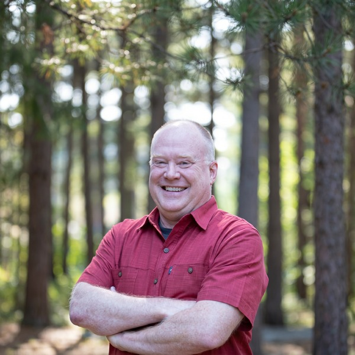

Ken Johnston
Co-founder · Policy & Enterprise
Ken leads the policy and enterprise side of the Foundation — translating the way large organizations actually govern AI into something a small district or city can use on a Tuesday. His work at Microsoft, Ford, and Autonomic spanned the hard edges of regulated, large-scale AI: risk frameworks, model governance, and the unglamorous discipline of keeping the receipts.
At the Expo, Ken takes the regulatory and technical questions — NIST, the GAO investigation, data privacy, and what governance run like engineering really looks like.